가스기능장 (2005-07-17 기출문제)
1과목: 임의 구분
1. CH4 1Nm3을 완전 연소시키는데 필요한 공기량은?
- 44.8Nm3
- 11.52Nm3
- 9.52Nm3
- 22.4Nm3
(정답률: 45%)

2. 다음 중 암모니아의 용도가 아닌 것은?
- 황산암모늄이 제조
- 요소비료의 제조
- 냉동기의 냉매
- 금속 산화제
(정답률: 91%)
3. 냉매의 구비조건으로 옳은 것은?
- 증발잠열이 작을 것
- 가스의 비체적이 적을 것
- 증발압력이 지나치게 낮을 것
- 응축압력이 지나치게 높고 액화가 어려울 것
(정답률: 78%)
4. methane 1g 당 연소열은 약 몇 kcal인가? (단, methane, 탄산가스 및 수증기의 생성열은 각각17.9kcal/mol, 94.1kcal/mol 및 57.8kcal/mol이다.)
- 0.2kcal
- 12kcal
- 120kcal
- 200kcal
(정답률: 40%)
5. 다음 원심펌프의 배관에 대한 설명 중 가장 적절한 것은?
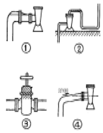
- 흡입관은 펌프구멍보다 굵은 것이 좋으므로 ①번 같이 배관했다.
- 토출관을 ②번 같이 하면 좋다.
- 흡입관에 부득이 밸브를 부착할 경우 ③번 같이 손잡이가 위로 가도록 한다.
- 흡입관을 ④번같이 구배를 주어 배관한다.
(정답률: 94%)
6. 비상공급시설 설치신고서에 첨부하여 시장, 군수, 구청장에게 제출해야 하는 서류가 아닌 것은?
- 안전관리자의 배치현황
- 설치위치 및 주위상황도
- 비상공급시설의 설치사유서
- 가스사용 예정시기 및 사용예정량
(정답률: 89%)
7. 이상기체의 부피를 현재의 1/3로 하고 절대온도(K)를 현재의 2배로 했을 경우 압력은 몇 배로 되겠는가?
- 1/6
- 4
- 6
- 8
(정답률: 64%)
8. 저장능력 100ton 초과 500ton 이하의 액화석유가스 충전시설에는 각각 몇 명의 안전관리자를 선임인원으로 두어야 하는가?
- 안전관리총괄자:1인, 안전관리책임자:1인, 안전관리원:1인 이상
- 안전관리총괄자:1인, 안전관리부총괄자:1인, 안전관리원:1인 이상
- 안전관리총괄자:1인, 안전관리부총괄자:1인, 안전관리책임자:1인, 안전관리원:2인 이상
- 안전관리총괄자:1인, 안전관리부총괄자:2인, 안전관리책임자:1인, 안전관리원:3인 이상
(정답률: 73%)
9. 10㎾는 몇 Hp인가?
- 5.13
- 13.4
- 22.5
- 31.6
(정답률: 81%)
10. 다음 가스 중 색이나 냄새로 가스의 존재유무를 확인할 수 없는 것은?
- 산소
- 암모니아
- 염소
- 황화수소
(정답률: 93%)
11. 정압과정에서의 전달 열량은?
- 내부에너지의 변화량과 같다.
- 이루어진 일량과 같다.
- 엔탈피 변화량과 같다.
- 체적의 변화량과 같다.
(정답률: 64%)
12. 비중량이 1.22[kgf/m3, 동점성계수가 0.15× 10-4[m2/s]인 건조 공기의 점성계수[poise]는?
- 1.83× 10-4
- 1.226× 10-6
- 1.226× 10-4
- 1.866× 10-6
(정답률: 50%)
13. 다음 가스 중 재해용 약제로서 가성소다(NaOH)나 탄산소다(Na2CO3)의 수용액을 사용하지 않는 것은?
- 염소(Cl2)
- 이산화황(SO2)
- 황화수소(H2S)
- 암모니아(NH3)
(정답률: 83%)
14. 배관 내의 마찰저항에 의한 압력손실에 대한 일반적인 설명으로 가장 거리가 먼 것은?
- 유체의 점도가 클수록 커진다.
- 관길이에 반비례한다.
- 관내경의 5승에 반비례한다.
- 유속의 2승에 비례한다.
(정답률: 69%)
15. 원심펌프를 높은 능력으로 운전할 때 임펠러 흡입부의 압력이 낮아지게 되는 현상은?
- 공기바인딩
- 에어리프트
- 케비테이션
- 감압화
(정답률: 87%)
16. 도시가스의 압력측정 부분으로 가장 부적당한 곳은?
- 압송기의 출구
- 가스홀더의 출구
- 정압기의 출구
- 가스 공급시설의 끝 부분
(정답률: 54%)
17. 다음 압력계 중 탄성식 압력계에 해당되지 않는 것은?
- 브르돈관 압력계
- 벨로우즈 압력계
- 피에조 압력계
- 다이아프램 압력계
(정답률: 76%)
18. 섭씨온도(℃)와 화씨온도(℉)가 같은 값을 나타내는 온도는?
- -20℃
- -40℃
- -50℃
- -60℃
(정답률: 97%)
19. 다음 중 이상기체를 가장 잘 나타낸 것은?
- 분자 부피는 있으나 인력이 무시되는 기체
- 인력은 작용하나 부피는 무시되는 기체
- 인력과 분자 부피가 무시되는 기체
- 분자 부피와 인력이 작용하는 기체
(정답률: 65%)
20. 암모니아 1톤을 내용적 50L의 용기에 충전하고자 한다. 필요한 용기는 몇 개인가?(단, 암모니아의 충전정수는 1.86이다.)
- 11
- 38
- 47
- 20
(정답률: 86%)
2과목: 임의 구분
21. 다음은 응력-변형율 선도에 대한 설명이다. ( )안에 알맞는 것은?
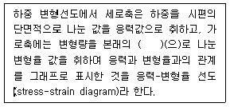
- 시편의 단면적
- 하중
- 재료의 길이
- 응력
(정답률: 84%)
22. 다음 중 기체상수(universal gas constant) R의 단위는?(오류 신고가 접수된 문제입니다. 반드시 정답과 해설을 확인하시기 바랍니다.)
- kg∙m / kg∙K
- kcal / kg∙℃
- kcal / cm2∙ ℃
- kg∙K / cm2
(정답률: 78%)
23. 지름 20[mm]이하의 동관을 이음할 때 또는 기계의 점검, 보수 기타 관을 떼어 내기 쉽게 하기 위한 동관의 이음 방법은?
- 플레어 이음
- 플랜지 이음
- 사이징 이음
- 슬리이브 이음
(정답률: 72%)
24. 축에 PS의 동력이 전달되는 경우, 전달마력 H(kgf m/sec), 1분간 회전수를 N(rpm)이라고 할 때 비틀림 모멘트 T(kgf·cm)를 구하는 식은?
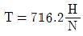
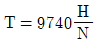
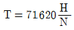
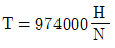
(정답률: 82%)
25. 독성가스라 함은 공기 중에 일정량 존재하는 경우 인체에 유해한 독성을 가진 가스를 말하는데, 허용농도가 얼마이하인 경우인가?(관련 규정 개정전 문제로 여기서는 기존 정답인 4번을 누르면 정답 처리됩니다. 자세한 내용은 해설을 참고하세요.)
- 100만분의 10이하
- 100만분의 50이하
- 100만분의 100이하
- 100만분의 200이하
(정답률: 50%)
26. 다음 중 반데르발스(Van der Waals)식의 표현이 올바른 것은?
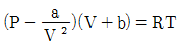
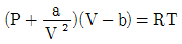
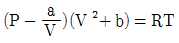
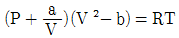
(정답률: 79%)
27. 펌프의 운전 중 소음과 진동의 발생 원인으로 가장 거리가 먼 것은?
- 서징 발생 시
- 공기의 불혼입 시
- 임펠러 국부 마모, 부식 시
- 베어링의 마모 또는 파손 시
(정답률: 81%)
28. 내부용적 60L의 고압탱크에 산소가 0℃에서 150기압으로 충전되어 있다. 이 산소의 어떤 양을 소비하고 보니 같은 온도에서 50기압이 되었다. 소비한 산소의 양은 표준상태에서 몇 m3 인가?
- 1
- 3
- 6
- 9
(정답률: 36%)
29. "소형저장탱크" 는 LPG를 저장하기 위하여 지상 또는 지하에 고정 설치된 탱크로서 저장능력이 몇 톤 미만인 탱크를 말하는가?
- 0.5
- 1
- 2
- 3
(정답률: 66%)
30. Dalton의 법칙에 대한 설명으로 옳지 않은 것은?
- 모든 기체에 대해 정확히 성립한다.
- 혼합기체의 전압은 각 기체의 분압의 합과 같다.
- 실제기체의 경우 낮은 압력에서 적용할 수 있다.
- 한 기체의 분압과 전압의 비는 그 기체의 몰수와 전체 몰수의 비와 같다.
(정답률: 84%)
31. 산소 봄베에 산소를 충전하고 봄베 내의 온도와 밀도를 측정하니 20℃, 0.1㎏/L이었다. 용기내의 압력은 얼마인가? (단, 산소는 이상기체로 가정한다.)
- 0.75기압
- 75.08기압
- 0.075기압
- 7.5기압
(정답률: 51%)
32. 가스가 65kcal의 열량을 흡수하여 10000Kg∙m의 일을 했다. 이 때 가스의 내부에너지 증가는?
- 32.4kcal
- 38.7kcal
- 41.6kcal
- 57.2kcal
(정답률: 47%)
33. 수소(H2)와 산소(O2)가 동일한 조건에서 대기 중에 누출되었을 때 확산속도는 어떻게 되는가?
- 수소가 산소보다 16배 빠르다.
- 수소가 산소보다 4배 빠르다.
- 수소가 산소보다 16배 늦다.
- 수소가 산소보다 4배 늦다.
(정답률: 82%)
34. 액화석유가스 충전사업의 용기충전 시설기준으로 옳지 않은 것은?
- 주거지역 또는 상업지역에 설치하는 저장능력 10톤이상의 저장탱크에는 폭발방지장치를 설치할 것
- 방류둑의 내측과 그 외면으로부터 5m 이내에는 그 저장탱크의 부속설비 외의 것을 설치하지 말 것
- 저장설비실 및 가스설비실에는 산업자원부장관이 정하여 고시하는 바에 따라 가스누출경보기를 설치할 것
- 저장설비실에 통풍이 잘 되지 않을 경우에는 강제통풍시설을 설치할 것
(정답률: 69%)
35. 내압 시험압력 350kg/cm2(절대압력)의 오토클레이브(autoclave)에 20℃에서 수소 100kgcm2(절대압력)을 충전하였다. 오토클레이브의 온도를 점차 상승시키면 결국 안전밸브(작동압력은 내압시험압력의 8/10로한다)에서 수소가스가 분출할 것이다. 이 때의 온도(℃)는 얼마인가? (단, 수소는 이상기체로 가정한다.)
- 547℃
- 647℃
- 720℃
- 820℃
(정답률: 29%)
36. 산소압축기에 대한 설명으로 가장 거리가 먼 것은?
- 제조된 산소를 용기에 충전하는 목적에 쓰인다.
- 윤활제로는 기름 또는 10% 이하의 묽은 글리세린수를 사용한다.
- 압축기와 충전용기 주관에는 수 분리기(drain separator)를 설치한다.
- 최근에는 산소압축기에 래비린스피스톤을 사용하는 무급유를 작동한다.
(정답률: 87%)
37. 도시가스사업법상 변경허가 대상이 되지 않는 것은?
- 가스의 열량 변경
- 대표자의 변경
- 공급능력의 변경
- 가스홀더의 종류의 변경
(정답률: 76%)
38. 비가역단열변화에서 엔트로피 변화는 어떻게 되는가?
- 변화는 가역 및 비가역과 무관하다.
- 변화가 없다.
- 감소한다.
- 반드시 증가한다.
(정답률: 61%)
39. 아세틸렌을 용기에 충전할 때 충전 중의 압력은 얼마 이하로 해야하는가?
- 1.5MPa
- 2.5MPa
- 3.5MPa
- 4.5MPa
(정답률: 94%)
40. 다음 중 자유도가 가장 작은 것은?
- 승화곡선
- 증발곡선
- 삼중점
- 용융곡선
(정답률: 88%)
3과목: 임의 구분
41. 시안화수소를 저장할 때는 안전관리상 충전용기의 가스누출 검사를 한다. 이 때 사용하는 것은?
- 질산구리벤지딘
- KI전분지
- 가성소다수용액
- 소석회
(정답률: 79%)
42. 다음 반응식 중 수소가스를 발생 시킬 수 없는 반응식은?
- 2Al + 6HCl → 2AlCl3 + 3H2↑
- Zn + 2NaOH → Na2ZnO2 + H2↑
- Cu + H2SO4 → CuSO4 + H2↑
- 2Al + 2NaOH + 2H20 → 2NaAlO2 + 3H2↑
(정답률: 59%)
43. 도시가스사업법에서 정의하는 보호시설 중 제 2종 보호시설은? (단, 가설건축물은 제외한다.)
- 문화재보호법에 의하여 지정문화재로 지정된 건축물
- 사람을 수용하는 건축물로서 사실상 독립된 부분의 연면적이 100m2이상 1000m2미만인 것
- 아동.노인.모자.장애인 기타 사회복지사업을 위한 시설로서 수용 능력이 20인 이상인 건축물
- 극장.교회 및 교회당 그 밖에 유사한 시설로서 수용능력이 300인 이상인 건축물
(정답률: 74%)
44. 서로 어긋나서 각을 이루며 만나는 두 축을 유니버설 조인트(훅크 조인트)하였을 경우에 일어나는 현상을 설명한 것으로 옳지 않은 것은?
- 종동축의 각속도는 원동축의 각속도와 일치하지 않는다.
- 중간축을 이용하여 양쪽에 유니버설 조인트를 하면 각속도는 일치하게 된다.
- 각속도는 서로 불일치 하지만 전달토오크에는 아무이상이 없다.
- 두 축이 어긋난 정도가 너무 크면(약 30°이상)사용이 곤란하다.
(정답률: 82%)
45. 차량에 고정된 탱크에 의한 운반 기준 중 독성가스(액화암모니아 제외)의 탱크 내용적은 얼마를 초과하지 않아야 하는가?
- 10000L
- 12000L
- 15000L
- 18000L
(정답률: 70%)
46. 고압가스 특정제조의 허가를 얻어야 하는 산업자원부령이 정하는 대규모 시설에 해당하지 않는 것은?
- 철강공업자의 철강공업시설 또는 그 부대시설에서 고압가스를 제조하는 것으로 그 처리능력이 10만m3이상인 것
- 석유화학공업자 또는 지원사업을 하는 자의 시설에서 고압가스처리 능력이 1000m3 이상 또는 그 저장능력이 50ton이상인 것
- 석유정제업자의 석유정제시설 또는 그 부대시설에서 고압가스를 제조하는 것으로서 그 저장능력이 100ton 이상인 것
- 비료생산업자의 비료제조시설 또는 그 부대시설에서 고압가스를 제조하는 것으로서 그 처리능력이 10만m3 이거나 저장능력이 100ton 이상인 것
(정답률: 62%)
47. 공기 중에 누출되었을 때 낮은 곳으로 흘러 고이는 것만으로 짝지어진 것은?
- 프로판, 수소, 아세틸렌
- 프로판, 염소, 포스겐
- 아세틸렌, 염소, 암모니아
- 아세틸렌, 포스겐, 암모니아
(정답률: 77%)
48. 완전가스의 엔탈피는?
- 온도만의 함수이다.
- 압력만의 함수이다.
- 온도와 압력의 함수이다.
- 온도, 압력 및 비체적의 함수이다.
(정답률: 81%)
49. 차량에 고정된 탱크로 고압가스를 운반할 때 가스를 송출 또는 이입하는데 사용되는 밸브를 후면에 설치한 탱크에서 탱크 주밸브와 차량의 뒷범퍼와의 수평거리는 몇 cm 이상 떨어져 있어야 하는가?
- 20cm
- 30cm
- 40cm
- 50cm
(정답률: 80%)
50. LPG 공급 방식 중 공기 혼합가스 공급방식의 목적에 해당되지 않는 것은?
- 발열량 조절
- 누설시의 손실감소
- 연소효율의 증대
- 재기화 현상방지
(정답률: 58%)
51. 다음 설명 중 수소의 용도가 아닌 것은?
- 암모니아 합성
- 환원성을 이용한 금속의 제련
- 인조보석, 유리제조용 가스
- 네온사인의 봉입용 가스
(정답률: 81%)
52. 공기 5kg이 온도 20℃, 게이지압력 7kg/cm2로 용기에 충전되어 있었으나, 수일 후에는 온도 10℃, 게이지압력 4kg/cm2로 되어 있었다. 몇 kg의 공기가 누출되었는가? (단, 이상기체로서 가정한다.)
- 1.76kg
- 2.76kg
- 3.24kg
- 4.24kg
(정답률: 18%)
53. 1mol의 산소기체에 대한 설명으로 옳지 않은 것은? (단, 산소를 이상기체로 가정한다.)
- 표준상태에서 22.4L를 차지한다.
- 일정온도에서 1atm 으로부터 10atm으로 가압하면 산소의 엔트로피는 몰당 4.6e.u 만큼 감소한다.
- 산소의 내부에너지는 온도가 일정한 어떤 변화에서도 변하지 않는다.
- 일정온도 이하에서 가압하면 액화한다.
(정답률: 41%)
54. 가스사용시설(연소기는 제외)의 시설기준 및 기술기준 중 기밀시험 압력으로 옳은 것은?
- 최고사용압력의 1.1배 또는 1kPa 중 높은 압력 이상
- 최고사용압력의 1.0배 또는 8.4kPa 중 높은 압력 이상
- 최고사용압력의 1.1배 또는 8.4kPa 중 높은 압력 이상
- 최고사용압력의 1.5배 또는 10kPa 중 높은 압력 이상
(정답률: 86%)
55. 다음 중 계량치 관리도는 어느 것인가?
- R 관리도
- nP 관리도
- C 관리도
- U 관리도
(정답률: 75%)
56. 여력을 나타내는 식으로 가장 올바른 것은?
- 여력 = 1일 실동시간 × 1개월 실동시간 × 가동대수
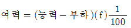
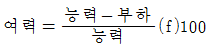
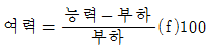
(정답률: 79%)
57. 생산보전(PM:Productive Maintenance)의 내용에 속하지 않는 것은?
- 사후보전
- 안전보전
- 예방보전
- 개량보전
(정답률: 76%)
58. 다음 데이터로부터 통계량을 계산한 것 중 틀린 것은?
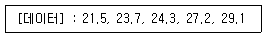
- 중앙값(Me) = 24.3
- 제곱합(S) = 7.59
- 시료분산(s2) = 8.988
- 범위(R) = 7.6
(정답률: 75%)
59. 다음 중에서 작업자에 대한 심리적 영향을 가장 많이 주는 작업측정의 기법은?
- PTS법
- 워크 샘플링법
- WF법
- 스톱 워치법
(정답률: 69%)
60. 다음 중 로트별 검사에 대한 AQL 지표형 샘플링검사 방식은 어느 것인가?
- KS A ISO 2859-0
- KS A ISO 2859-1
- KS A ISO 2859-2
- KS A ISO 2859-3
(정답률: 64%)
공기는 대략적으로 78%의 질소와 21%의 산소로 이루어져 있습니다. 따라서 CH4 1Nm3을 연소시키기 위해서는 44.8g의 산소가 필요합니다. 이를 계산하면 약 1.4mol의 산소가 필요하다는 것을 알 수 있습니다.
공기 중의 질소와 산소는 비율이 일정하기 때문에, 1.4mol의 산소를 얻기 위해서는 1.4mol의 질소도 함께 필요합니다. 따라서 CH4 1Nm3을 연소시키기 위해서는 총 2.8mol의 공기가 필요합니다.
하지만 문제에서는 공기량을 묻고 있으므로, 이를 부피로 환산해야 합니다. 공기의 분자량은 대략적으로 29g/mol이므로, 2.8mol의 공기는 81.2g입니다. 이를 부피로 환산하면 약 9.52Nm3이 됩니다. 따라서 정답은 "9.52Nm3"입니다.